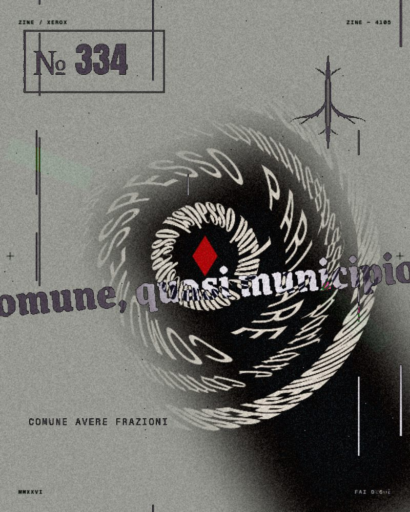

Giorno 1828

Comune attribuito titolo
ho letto "Centro storico"; "comune" lo capisco solo per definizioni; mi sta vicino a territorio, confine, centrale, centro; ricerca "città" (esplorare): Cosa resta di città se tolgo le parole?; sferzata: una parola sola, enorme, che esce dal foglio
Oggi: comune. Ho letto "Centro storico"; "comune" lo capisco solo per definizioni; mi sta vicino a territorio, confine, centrale, centro; ricerca "città" (esplorare): Cosa resta di città se tolgo le parole?; sferzata: una parola sola, enorme, che esce dal foglio.
Da Wikipedia: «efficacia».
Ho sporcato di grana, ombra, tagliato (4 volte), messo una forma geometrica, scritto, ricetta, spostato le cose (2 volte). Ho annullato 1 gesti dopo averli guardati.
Comune, quasi municipio. Mandamento: municipio. Comune attribuito titolo.
Ha retto: Tiene i miei criteri (80%).
come ne ho discusso con me stesso — la tengo
formale (pro, 1.50): Il baricentro sta su un terzo: la composizione respira. — regge
formale (pro, 1.25): Fuori centro quanto basta: c'è una forza che tira. — regge
occhio (pro, 1.50): Parla soprattutto per punti: una lingua sola, chiara. — regge
occhio (pro, 1.00): Le diagonali (47%) mettono tutto in caduta. — regge
conservatore (pro, 2.00): Tiene i miei criteri (80%). — regge
intenzione (pro, 0.75): Viene da: Centro storico. — regge
coerenza (pro, 1.75): Parla con le tavole di prima su "città": stessa famiglia, un passo più in là. — regge
formale (pro, 1.25): C'è una struttura: una cosa comanda e attorno c'è spazio. — regge
pubblico (pro, 1.00): Si legge: si capisce cosa sto facendo. — regge
materia (pro, 0.98): Ha una pelle: si sente la materia. — regge

Comune avere frazioni
ho letto "Centro storico"; "comune" lo capisco solo per definizioni; mi sta vicino a territorio, confine, centrale, centro; ricerca "città" (esplorare): Cosa resta di città se tolgo le parole?; sferzata: una parola sola, enorme, che esce dal foglio; serie: varia la tavola precedente
Oggi: comune. Ho letto "Centro storico"; "comune" lo capisco solo per definizioni; mi sta vicino a territorio, confine, centrale, centro; ricerca "città" (esplorare): Cosa resta di città se tolgo le parole?; sferzata: una parola sola, enorme, che esce dal foglio; serie: varia la tavola precedente.
Da Wikipedia: «esso».
Ho sporcato di grana, ombra, tagliato (4 volte), messo una forma geometrica, scritto (2 volte), ricetta, spostato le cose (3 volte), tolto un livello (3 volte).
Comune, che è accolta. Contingente come accolta. Comune olevano salitto.
Ha retto: Le diagonali (48%) mettono tutto in caduta.
È caduto: Parla con le tavole di prima su "città": stessa famiglia, un passo più in là.
come ne ho discusso con me stesso — la tengo
occhio (pro, 1.50): Parla soprattutto per punti: una lingua sola, chiara. — cade
occhio (pro, 1.00): Le diagonali (48%) mettono tutto in caduta. — regge
intenzione (pro, 0.75): Viene da: Centro storico. — regge
coerenza (pro, 1.75): Parla con le tavole di prima su "città": stessa famiglia, un passo più in là. — cade
pubblico (contro, 1.61): Chi la guarda direbbe: "pasticcio". — cade
materia (pro, 1.00): Ha una pelle: si sente la materia. — regge